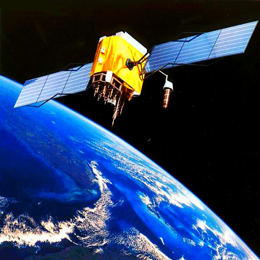

Sistema de Posicionamiento Global
Autor: Pedro Guillermo García López

¿Qué es?
Es un sistema de navegación por satélite que proporciona información sobre la ubicación, la velocidad y la hora a los usuarios en todo el mundo. Está compuesto por una red de 24 satélites que orbitan la Tierra y un conjunto de estaciones terrestres que monitorean los satélites y envían señales de corrección.